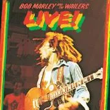

Bob Marley
Home
Sobre
Reggae
Catch a Fire
Contrete Jugle
Slave Driver
400 Years
Stop That Train
Baby We've Got a Date (Rock It Baby
Stir It Up
Kinky Reggae
No More Trouble
Midnight Ravers
High Tide or Low Tide
All Day All Night
Natty Dread
Lively Up Yourself
No Woman, No Cry
Them Belly Full (But We Hungry)
Rebel Music (3 O'Clock Roadblock)
So Jah Seh
Natty Dread
Bend Down Low
Talkin' Blues
Revolution
Am-A-Do" (Bonus track)
Live!

Trenchtown Rock
Burnin' and Lootin'
hem Belly Full (But We Hungry)
Lively Up Yourself
No Woman, No Cry
I Shot the Sheriff
Get Up, Stand Up
Kinky Reggae" (bonus track)
Música Favorita
Bob Marley and the Wailers song
Título:
Is This Love
Álbum:
Kaya
Género:
Reggae
Lançamento:
1978
Seu navegador não suporta HTML5